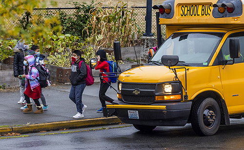

Returning to the classroom
The pandemic pushed some students out of Washington's schools.
New data tells us who left.

Students pass a school bus after being dropped off Sept. 17, 2021 at Rising Star Elementary School. (Daniel Kim / The Seattle Times)
<% doc.intro.forEach(function(s,i) { %>
<% doc.intro2.forEach(function(s,i) { %>
<%= s.value %>
<% }) %>
Education Lab is a Seattle Times project that spotlights promising approaches
to persistent challenges in public education. The Seattle Foundation serves as fiscal sponsor for Education Lab,
which is supported by grants from the Bill & Melinda Gates Foundation, Amazon, Comcast Washington and City University
of Seattle. Learn more about Ed Lab.

<%= s.value %>
<% }) %>
Select a topic below to see data and charts
The pandemic pushed some kids out of public schools last year
K-12 Enrollment
About 4% fewer kids went to school in 2020-21.
For-profit schools
Enrollment up 35% in a year.
School reopenings
More conservative areas offered in‑school learning first.
Many low-income students aren't going to college during the pandemic
Community colleges
Enrollment dropped about 18%.
Student financial aid completion
Completion rates declined.
Income over time
People with a bachelor’s degree earn twice as much as those without a high school diploma.
Credits
Reporting: Hannah Furfaro and Dahlia Bazzaz
Graphics: Lauren Flannery
Design and development: Lauren Flannery
Editing: Richard Wagoner, Katherine B. Long, Emily M. Eng and Frank Mina